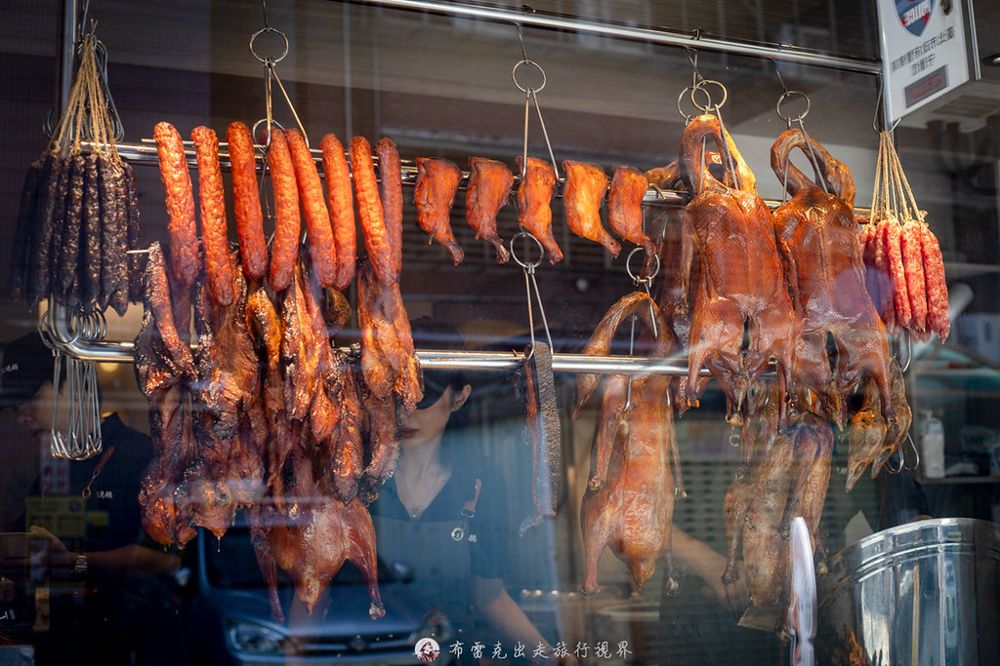

海王燒鵝遼寧店｜南京復興站外帶燒味：燒鵝、叉燒雙拼與售罄提醒

一句話：想在南京復興附近吃燒鵝與叉燒為主的燒味便當，可把海王燒鵝放入清單；但它偏外帶、熱門時段容易售罄，先訂比現場碰運氣可靠。
店家資訊
- 店名：海王燒鵝遼寧店
- 地址：台北市中山區復華里遼寧街185巷7弄16號
- 電話：(02) 2717-3646
- 交通：來源標示南京復興站 8 號出口步行約 3 分鐘
- 營業時間：週一至週五 10:30–13:30、16:30–19:00；週六、日公休
- 型態：座位不多，以外帶燒味餐盒為主
以上營業資訊出自 2026-09-22 更新的食記，屬易變動資訊；出發或訂購前請再向店家確認。
點什麼：先鎖定燒鵝與叉燒
來源作者連續兩日造訪後，將叉燒與燒鵝列為核心推薦：叉燒帶鹹甜與焦香，燒鵝則以肉質嫩、帶油脂香氣為其評價重點。若第一次點，可考慮叉燒燒鵝雙拼；食記中「雙拼加肉」為 NT$220。
來源列出的招牌燒味飯約 NT$140–180，另有雙拼、三寶、燒味拼盤與單點。這些是截取時菜單資訊，價格與供應品項仍以現場為準。
最重要的實用提醒
- 燒鵝是當日早上出爐，售完就沒有。
- 午餐不要壓線。來源作者曾在 12:30 抵達時已買不到燒鵝。
- 若指定燒鵝腿，來源描述即使上午 10 點預訂也可能沒有名額；有明確需求就儘早聯絡。
- 週末公休，適合規劃為平日午餐或下班前外帶，而非假日探店。
- 配菜不是此店的主要亮點；將預算與期待放在燒味本身較合理。
適合誰
- 南京復興、遼寧街一帶需要平日外帶午餐的上班族
- 想比較燒鵝、叉燒等港式燒味的人
- 願意提早訂購、可接受售罄風險的人
來源與證據界線
本文依據布雷克的出走旅行視界食記整理，並在本地保存一張來源代表照片與擷取紀錄。口味評價、排隊／售罄情形、餐點供應、價格與營業資訊皆可能隨時間改變，未將單一食記觀察寫成店家永久承諾。